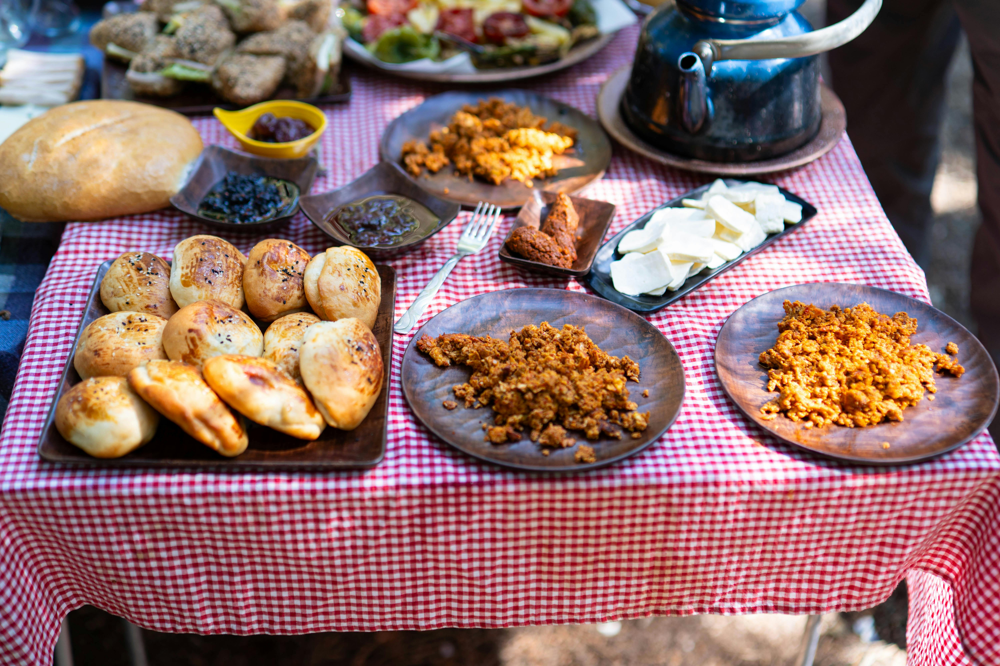
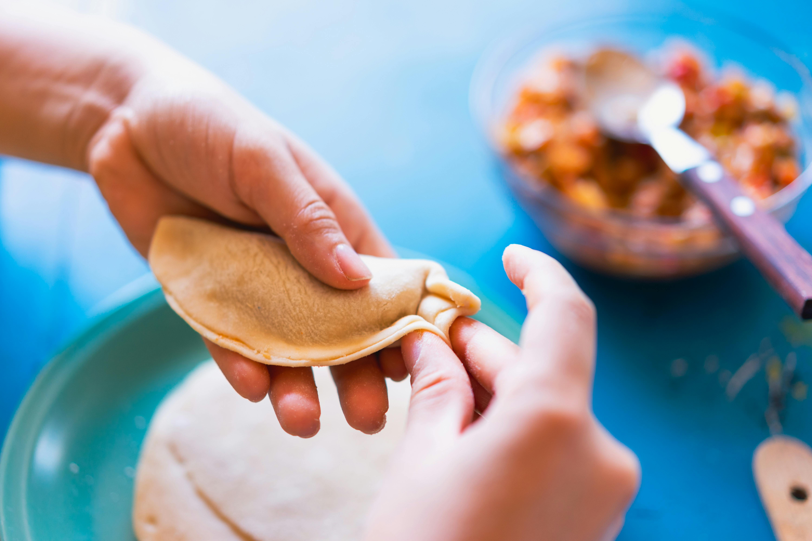
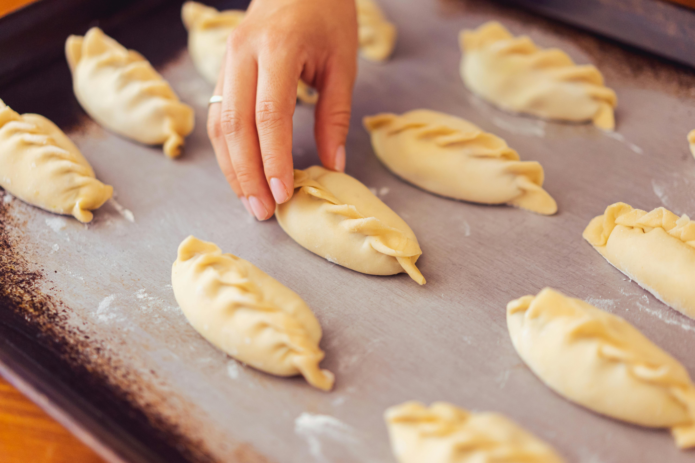
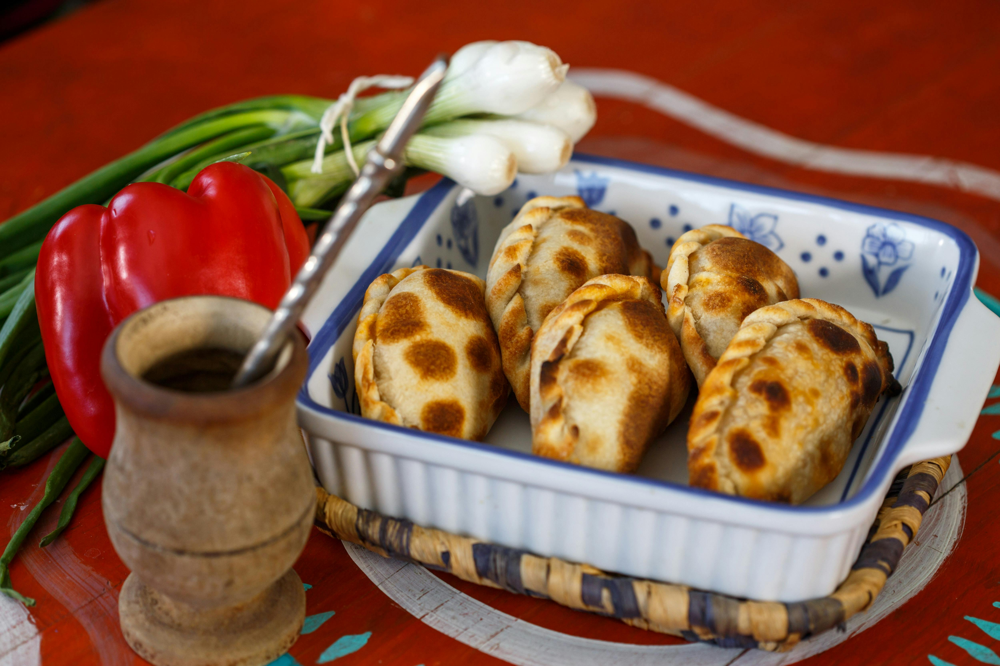
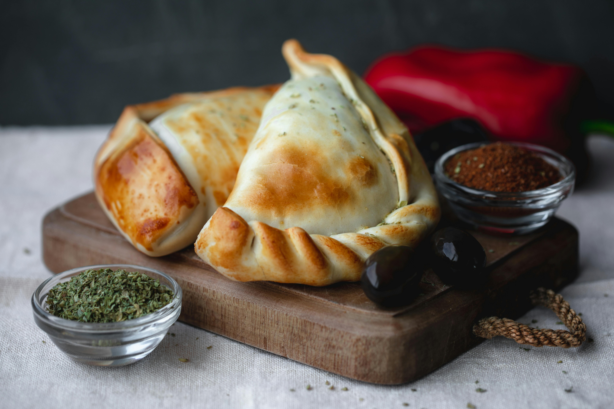

Argentine Empanadas
A beloved classic in Argentina's culinary tradition, empanadas have become a popular dish across the world, cherished for their versatility and rich flavors. With a variety of filling options, from savory meats to vegetables and cheeses, there's an empanada for everyone. Enjoy them for breakfast, lunch, or dinner, served as an appetizer or main dish, these golden pastries never disappoint!
Ingredients
For the filling:
- 2 Tablespoons olive oil
- 2 white onions, chopped
- 3 cloves garlic, minced
- 1 Tablespoon cumin
- 2 Tablespoons sweet paprika
- 2 Tablespoons olive oil
- 1 Tablespoon oregano
- 1 lb lean ground beef
- Salt and pepper to taste
- 2 Hard boiled eggs. peeled and finely chopped
- Empanada dough-tapas criolla




Instructions

For filling
- Heat olive oil over medium-low heat. Add onion and garlic, cook for 10 minutes, stirring often.
- Add cumin, sweet paprika, and oregano. Cook for 2 minutes.
- Increase heat to medium and add the ground beef. Season with salt and pepper and cook, crumbling into small pieces, until browned. Stir in beef boullion.
- Remove from heat and transfer mixture to a bowl to cool for 10 minutes. Then, stir in hard-boiled eggs.
- Cover and chill mixture for at least 1 hour or until the mixture is chilled before filling the empanadas.
Assembly:
- Using the dough-tapas, place about 2 tablespoons of filling in the center of each tapa, leaving plenty of space around the border. Moisten the edges of the tapa with water, then fold the dough over and match the ends together to form a semi-circle.
- Pinch the edges together and then seal the ends by crimping them with a fork or pinching and twisting/folding it over.
- Baked Empanadas: Place empanadas on a baking sheet lined with parchment paper. Brush with a little bit of egg wash and bake at 375° For 25-30 minutes until golden brown and fully cooked.
- Fried Empanadas:Refrigerate the empanadas for 20 minutes before frying to help the dough firm up and hold its shape before placing in the hot oil. Add several inches of hot oil to a pot and heat to about 365° F. Fry one or two empanadas at a time, flipping once, until golden on both sides (1-2 minutes per side). Place on a paper-towel lined plate.